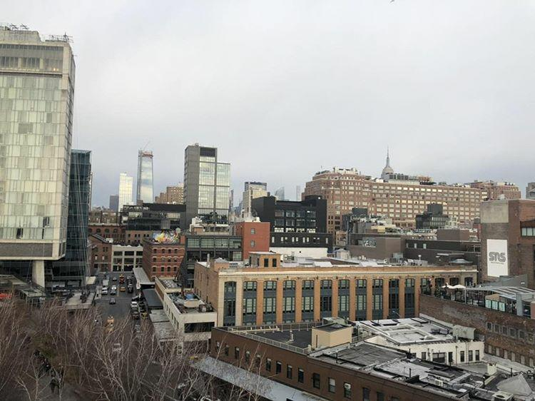
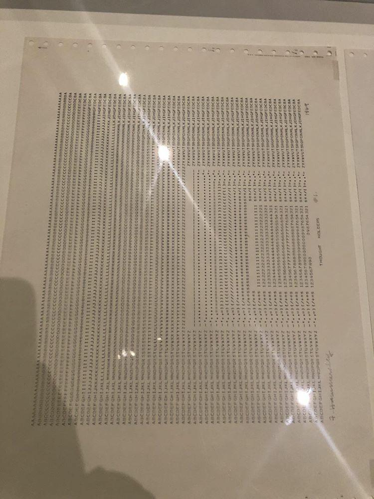
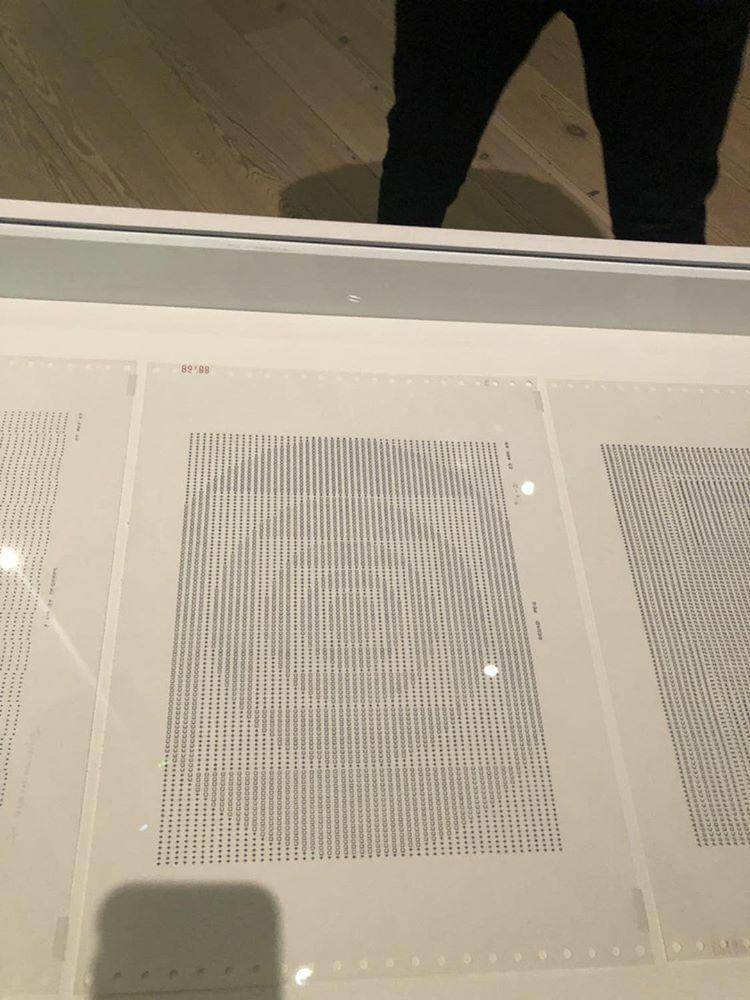
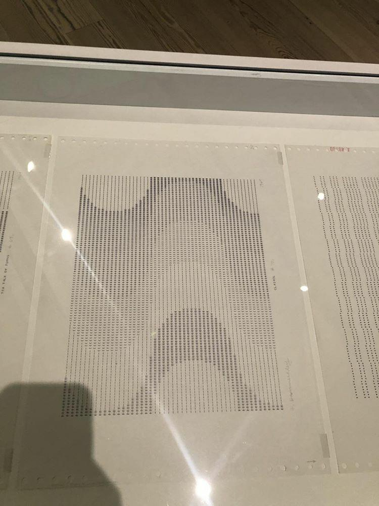
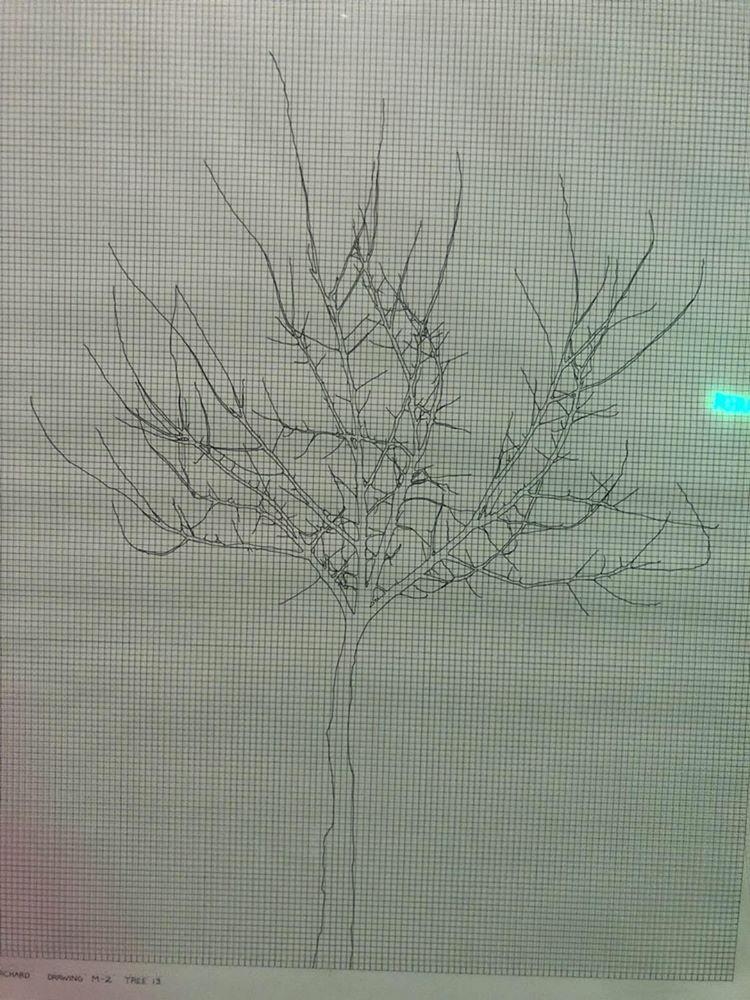
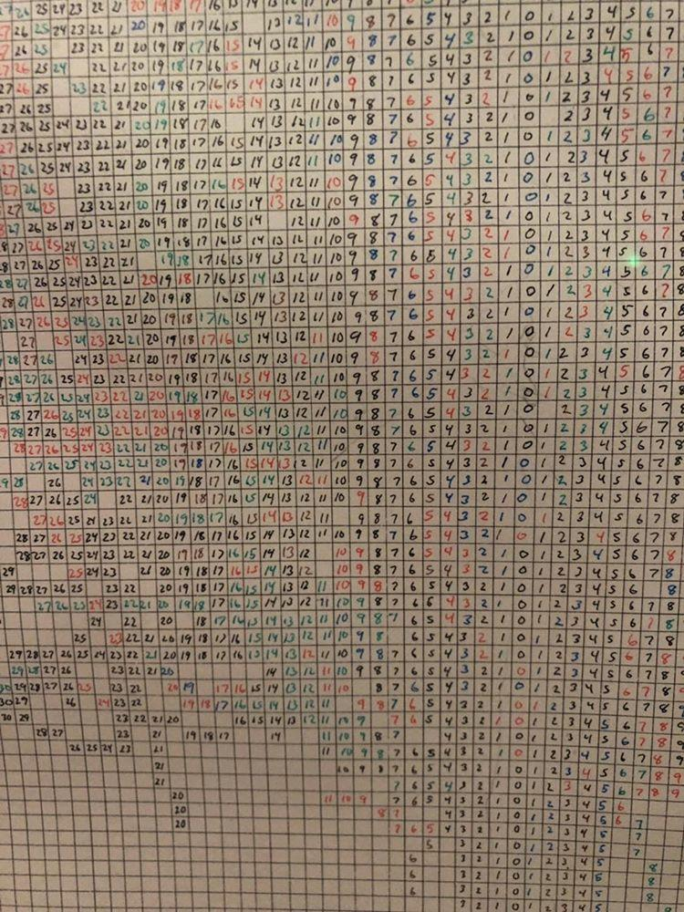
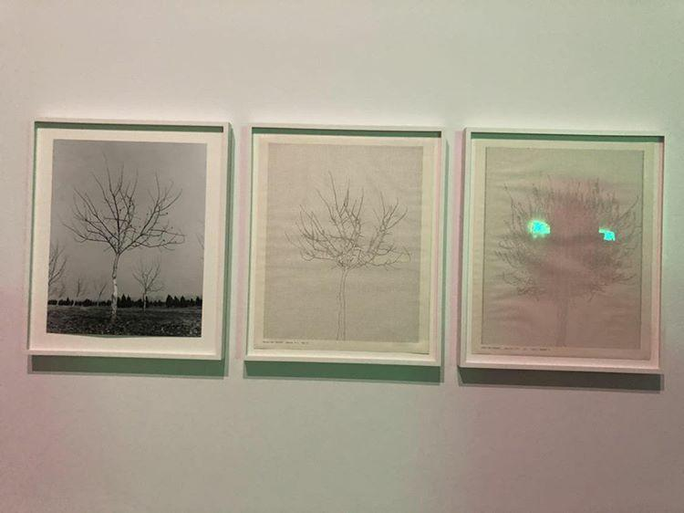
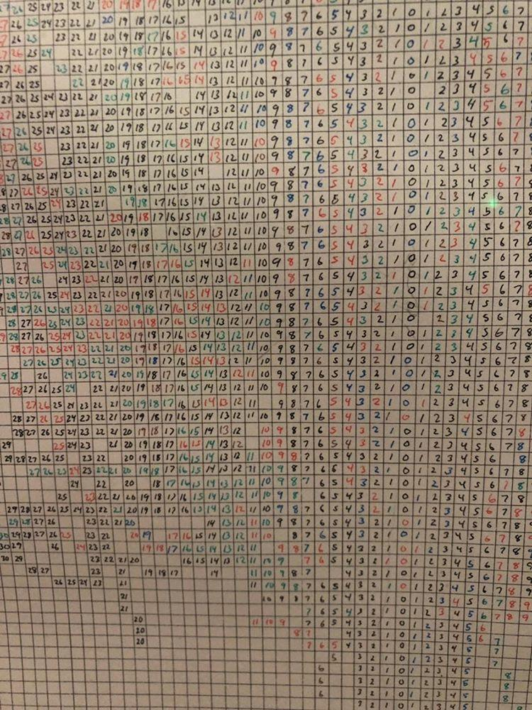
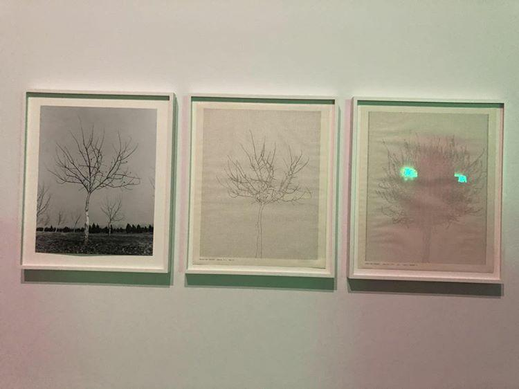

Extra Credit.

.mp4)
Cory Arcangel
1978;Buffalo NY
This video shows that Cory handmade hacked Super Mario Brothers cartridge
and Nintendo NES video-game system. By altering the game's code, he removed
the sound and all visual elements except the clouds. Cory's intensions were
to master creative exploration; he often learned new programming language
to develop new work.



Frederick Hammersley
1919; Salt Lake City, UT
In 1968, Hammersley, began using the University of New Mexico's IBM mainframe computer to make images through an iterative process
(repeated cycles of variations.) He mastered these creations by using the computer program ART I.This work demostrated the connecetions
between natural and programming language by using the alphabet itself.

 



Charles Gaines
1944;Charleston, SC
Walnut Tree Orchard; M1,M2,M3,1977
Three parts:pen and ink and graphite pencil on paper; and pen and ink and correction fluid on paper.
.mp3)
Ian Cheng
1984; Los Angeles, CA
Baby feat. Ikaria, 2013
Live simulation,sound,artificial intelligence service;infinite duration
Cheng's software enables an audible conversation between three online chatbots whosw voices animate a swirl of debris.
This software contains three different customized chatbots from an online service so that they "talk" to each other. The
debris repeatedly coalescing and then disintegrating and sometimes appearing as an active agent and often as an ambiguous hybrid.
The floating debris can capture an artificial intelligence that is lifelike yet mechanistic, that reflects the mix of nonhuman
and human conversations that increasingly permeates our live.
Back to main page